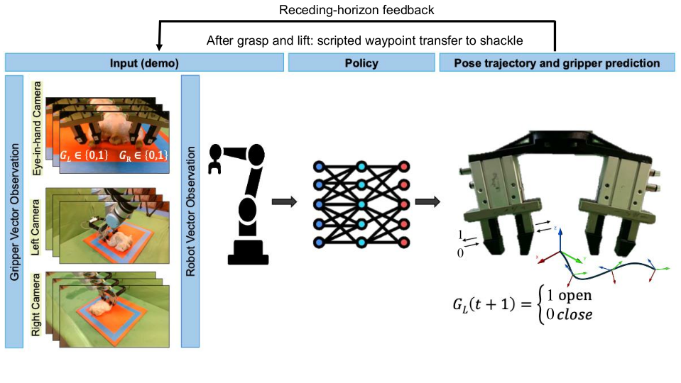

ChicGrasp
Imitation-Learning-Based Customized Dual-Jaw Gripper Control
for Manipulation of Delicate, Irregular Bio-Products
Advanced Robotics Research · 2026

ChicGrasp combines a customized pneumatic gripper and imitation learning to handle delicate, irregular poultry carcasses with a UR10e robot. A diffusion policy coordinates robot motion with two independently actuated jaw groups; a scripted sequence then transfers the carcass to a shackle. Trained from 100 demonstrations, the system achieved 113 successful trials out of 140 (80.71%) in the published hardware study.
Highlights

Project video
The final overview will appear here. Watch the original project video.
Diffusion-policy evaluations
All 142 available diffusion-policy recordings from the wrist camera, arranged by episode number. Every window starts together and plays at 4× speed; shorter recordings hold their final frame.
IBC evaluations
All 3 available IBC recordings from the wrist camera, arranged by episode number. Every window starts together and plays at 4× speed; shorter recordings hold their final frame.
LSTM-GMM evaluations
All 3 available LSTM-GMM recordings from the wrist camera, arranged by episode number. Every window starts together and plays at 4× speed; shorter recordings hold their final frame.
Published results
Each method was evaluated in ten trials on each of fourteen carcasses. The published success criterion includes a two-leg grasp, lift, and completed scripted rehang.
| Method | Seen carcasses | Unseen carcasses | Overall |
|---|---|---|---|
| Diffusion Policy | 84/100 (84.0%) | 29/40 (72.5%) | 113/140 (80.71%) |
| IBC | 0/100 | 0/40 | 0/140 |
| LSTM-GMM | 0/100 | 0/40 | 0/140 |

Training curves

Gripper design and control
A UR10e positions the gripper while the two jaw groups open and close independently. The policy conditions on three RGB camera views, end-effector pose, and jaw states.
The stored action contains:
[x, y, z, rx, ry, rz, left_jaw, right_jaw]
Jaw values decode to binary commands: 0 = closed, 1 = open. The paper describes five task commands; the archived implementation also retains the three orientation values.
My contribution
I designed and fabricated the gripper, developed the data collection and robot-control software, and trained the diffusion policy and baselines. I designed and conducted the experiments, analyzed the data, and created the research figures. I also wrote the manuscript and built the project’s GitHub repository and documentation.
Amirreza Davar · First author. The publication credits the full research team listed above.
Ongoing work: Isaac Lab
A separate simulation workbench explores articulated anatomy, grasp retention, and shackle contact.
This excerpt shows a held practice configuration. A repeatable released two-hock hang has not been verified. This work is separate from the published hardware study.
Code, data, and paper
Source code · Data and checkpoints · Published paper · Sources and reproduction
Citation
@article{davar2026chicgrasp,
title = {ChicGrasp: Imitation-Learning-Based Customized Dual-Jaw Gripper Control for Manipulation of Delicate, Irregular Bio-Products},
author = {Davar, Amirreza and Xu, Zhengtong and Mahmoudi, Siavash and Sohrabipour, Pouya and Pallerla, Chaitanya and She, Yu and Shou, Wan and Crandall, Philip Glen and Wang, Dongyi},
journal = {Advanced Robotics Research},
year = {2026},
pages = {e202500149},
doi = {10.1002/adrr.202500149},
url = {https://doi.org/10.1002/adrr.202500149}
}
ChicGrasp builds on the Diffusion Policy implementation by Chi et al. Page layout and evaluation-grid presentation are inspired by the Diffusion Policy project page. All displayed experiments, CAD, and model outputs are ChicGrasp material.